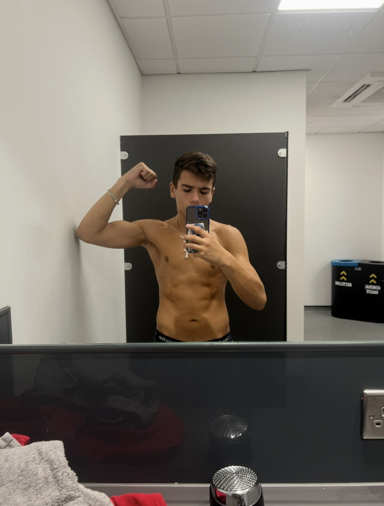
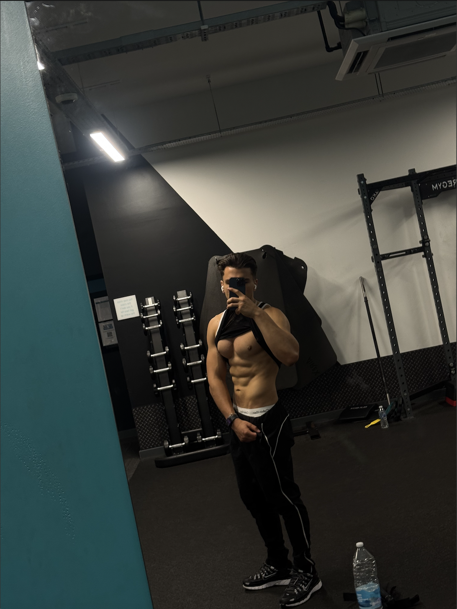

Complete your weekly check-in below.</p>

<a href="https://docs.google.com/forms/d/e/1FAIpQLSfCrfbxBTwamB3huiFv4zBa6o9BANs8Gwf1Lf9VrHccP5iItg/viewform?usp=publish-editor" target="_blank">
  Submit Weekly Check-In
  <!DOCTYPE html>
<html lang="en">
<head>
  <meta charset="UTF-8">
  <title>Progress Tracker</title>
</head>
<body>

<nav>
  <a href="index.html">Home</a>
  <a href="workout.html">Workouts</a>
  <a href="meals.html">Meal Plan</a>
  <a href="progress.html">Progress</a>
</nav>

<h1>Progress Tracker</h1>

<h2>Weekly Checklist</h2>

<h3>Week 1</h3>
<ul>
  <li>☐ Completed workouts</li>
  <li>☐ Followed meal plan</li>
  <li>☐ Hit step goal</li>
  <li>☐ Took progress photos</li>
</ul>

<h3>Week 2</h3>
<ul>
  <li>☐ Completed workouts</li>
  <li>☐ Followed meal plan</li>
  <li>☐ Hit step goal</li>
  <li>☐ Took progress photos</li>
</ul>

<h3>Week 3</h3>
<ul>
  <li>☐ Completed workouts</li>
  <li>☐ Followed meal plan</li>
  <li>☐ Hit step goal</li>
  <li>☐ Took progress photos</li>
</ul>

<h3>Week 4</h3>
<ul>
  <li>☐ Completed workouts</li>
  <li>☐ Followed meal plan</li>
  <li>☐ Hit step goal</li>
  <li>☐ Took progress photos</li>
</ul>

<h3>Week 5</h3>
<ul>
  <li>☐ Completed workouts</li>
  <li>☐ Followed meal plan</li>
  <li>☐ Hit step goal</li>
  <li>☐ Took progress photos</li>
</ul>

<h3>Week 6</h3>
<ul>
  <li>☐ Completed workouts</li>
  <li>☐ Followed meal plan</li>
  <li>☐ Hit step goal</li>
  <li>☐ Took progress photos</li>
</ul>

<h2>Before & After</h2>
<p>Add your photos in your repo folder and display them here.</p>
h2>Client Transformations</h2>

<div>
  
  
</div>

<p>Before → After</p>
  <link rel="stylesheet" href="style.css">
  <div class="container">
  <!-- your content here -->
</div>
</body>
</html>
